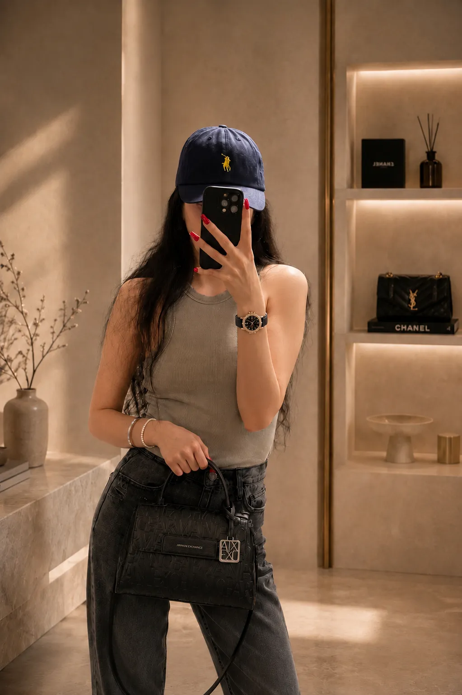

The Advisory
Style is not what you wear.
It is who you are.
How we help — quietly, personally, piece by piece

The Method
Three quiet steps. No noise.
“ You will not leave with more things.
You will leave with the right ones. ”